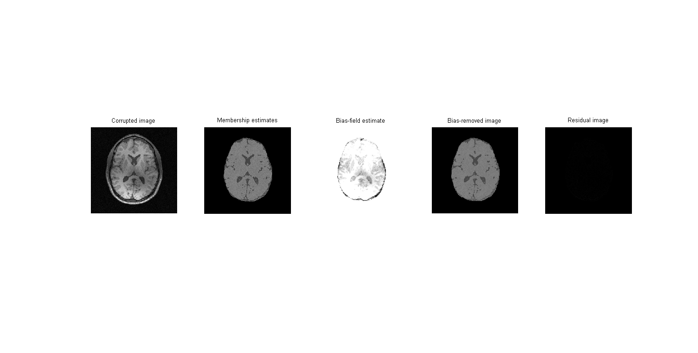

Segmenting a Brain Magnetic Resonance Image using Fuzzy C-Means
Given a bias-corrupted and noise-corrupted magnitude-MRI of a brain, we want to segment the image into three classes, white matter, grey matter and cerebrospinal fluid
clear all load('assignmentSegmentBrain.mat'); brainData = imageData .* imageMask; % imwrite(imageData, 'imageData.png', 'png'); % imwrite(imageMask, 'brainMask.png', 'png'); % imwrite(brainData, 'brainData.png', 'png'); [r, c] = size(brainData); bias = zeros(r, c); bias(:) = mean(mean(brainData)); bias = bias .* imageMask; bias = 0.5 * bias / max(max(bias)); bias = ones(r,c);
Our motivation for initialising the class means was to pick a very approximate set of values quickly. So we simply used manual inspection: namely, we observed the intensity values at a few points in the image and visually determined the type of the tissue we were observing. We used the observed values as initial values of the class means
class = [140; 100; 70]; class = class / 255;
Our motivation was to quickly initialise the membership values to sensible values. So given the class means, we simply measure the absolute difference of the pixel from each class mean, and use that as a rough measure of membership (after normalizing by dividing by the sum of the differences). As can be seen in the Images/ folder, we get very rough but workable approximations for the white matter and CSF tissue (although not for the grey matter tissue)
memb = zeros(r,c,3); for i = 1:r for j = 1:c if imageMask(i,j) == 0 continue end temp = (abs(brainData(i,j) - class)).^2; memb(i,j,:) = temp / sum(temp); end end memb = 1 - memb; memb(:,:,1) = memb(:,:,1) .* imageMask; memb(:,:,2) = memb(:,:,2) .* imageMask; memb(:,:,3) = memb(:,:,3) .* imageMask; % figure(1), imshow(memb(:,:,1)); % figure(2), imshow(memb(:,:,2)); % figure(3), imshow(memb(:,:,3)); imwrite(memb(:,:,1), '../Images/white-matter.png', 'png'); imwrite(memb(:,:,2), '../Images/grey-matter.png', 'png'); imwrite(memb(:,:,3), '../Images/cs-fluid.png', 'png');
q = 2; w = 9; % width of the window hw = (w+1)/2; % half-width gauss = fspecial('gaussian', [w w]); gauss(hw,hw) = 0; % eliminate the centre mask gauss = gauss / sum(sum(gauss)); % imshow(gauss); imwrite(gauss, '../Images/neighbourhood-mask.png', 'png');
dist = zeros([3 1]);
Optimization via Lagrange multipliers using the methods discussed in the slides on Image Segmentation, specifically, slides 60, 62 and 63
temp_memb = zeros(size(memb)); temp_bias = zeros(size(bias)); for iter = 1:20 cl_numer = [0;0;0]; cl_denom = [0;0;0]; for i = 1:r for j = 1:c if imageMask(i,j) ~= 0 % update the d_kj values window = bias(i-hw+1:i+hw-1,j-hw+1:j+hw-1); diff = (brainData(i,j) - class(1) .* window) .^ 2; dist(1) = sum(sum(gauss .* diff)); diff = (brainData(i,j) - class(2) .* window) .^ 2; dist(2) = sum(sum(gauss .* diff)); diff = (brainData(i,j) - class(3) .* window) .^ 2; dist(3) = sum(sum(gauss .* diff)); % update the membership variables u_jk powers = dist .^ ((-1)/(q-1)); % temp_memb(i,j,:) = powers ./ (powers(1) + powers(2) + powers(3)); memb(i,j,:) = powers ./ (powers(1) + powers(2) + powers(3)); % calculating the class means common_term = (memb(i,j,:) .^ q); cl_numer = cl_numer + reshape(common_term .* (brainData(i,j) * sum(sum(gauss .* window))), [3 1]); cl_denom = cl_denom + reshape(common_term .* (sum(sum(gauss .* (window .^ 2)))), [3 1]); % update the bias field common_term2 = reshape(common_term, [3 1]) .* class; temp = sum(common_term2); % bi_numer = sum(sum(window .* (brainData(i,j) * temp))); bi_numer = sum(sum(gauss .* (brainData(i,j) * temp))); temp = sum(common_term2 .* class); % bi_denom = sum(sum(window .* temp)); bi_denom = sum(sum(gauss .* temp)); % temp_bias(i,j) = bi_numer / bi_denom; bias(i,j) = bi_numer / bi_denom; end end end class = cl_numer ./ cl_denom; % bias = temp_bias; % memb = temp_memb; end
biasRemoved = removeBias(memb, class); residual = residualImage(brainData, biasRemoved, bias); % finalEstimate = finalClassEstimate(memb, class); [r c] = size(memb(:,:,1)); finalEstimate = zeros([r c]); for i = 1:r for j = 1:c if imageMask(i,j) ~= 0 membs = memb(i,j,:); assigned = find(membs == max(membs)); finalEstimate(i,j) = class(assigned); end end end
h=figure('units','normalized','outerposition',[0 0 1 1]); title('All images compared') subplot(1,5,1), imshow(imageData), title('Corrupted image') subplot(1,5,2), imshow(finalEstimate), title('Membership estimates') subplot(1,5,3), imshow(bias), title('Bias-field estimate') subplot(1,5,4), imshow(biasRemoved), title('Bias-removed image') subplot(1,5,5), imshow(residual), title('Residual image') saveas(h,'../Images/combined','png');